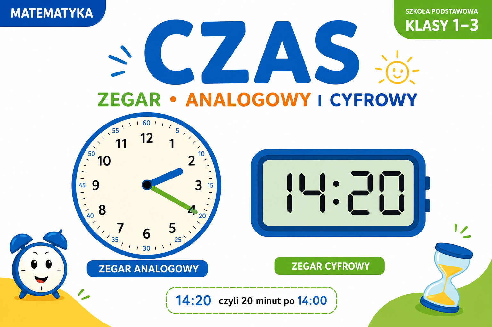

1
jednostki czasu
одиниці часу

📘 Co to jest? Що це?
Czas mierzymy sekundami, minutami i godzinami — jak „pudełka” w pudełkach.
Час міряємо секундами, хвилинами і годинами — як «коробки» в коробках.
⭐ Zapamiętaj Запам'ятай
1 h = 60 min · 1 min = 60 s
1 хвилина = 60 секунд; 1 година = 60 хвилин. Це система 60!
⚠ Nie pomyl Не плутай
- 1 h = 60 min1 min = 60 s
✅ Przykłady Приклади
- s, min, h
- 45 min lekcja
- 1 h = 60 min
- 3 h podróży
- sekundy na stoperze